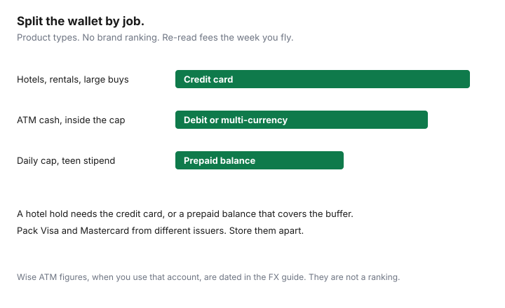

Travel · Canada
Prepaid Travel Cards vs Credit Cards Abroad for Canadians: A Practical Split
Households load a prepaid travel card with “the whole trip,” then stand at a hotel desk while the authorization for incidentals is declined. The balance was the room rate. The hold was the room rate plus a buffer the card could not float. Prepaid cards, debit cards, and credit cards are different tools. None of them is the winner for every purchase, and this page will not rank brands.
Pair the split with the FX guide and the local-currency rule. Every instrument below still has to refuse dynamic currency conversion. Fee figures that mention a named multi-currency account are the ones already dated on the FX guide. Re-read them the week you fly.
Disclosure: Multi-currency accounts and credit cards that do not add a foreign-transaction fee are an offer type. Saving Optimizer may earn a commission if we later add partner links. We do not claim a bank or card-network partnership. We do not rank cards, and we do not name a best travel card. Education only.
Key takeaways
- Credit cards pay hotels, car rentals, and larger purchases. Holds and dispute rights live in that product. Rewards do not repair a foreign-transaction fee you failed to read.
- Debit or a multi-currency account pays ATM cash, inside a fee-free limit. A credit-card cash advance is not the backup plan.
- Prepaid is a ceiling: a teen stipend, a daily cap, a balance you can afford to lose. Reloads, inactivity, and leftover currency are the costs.
- Hotel and rental holds freeze prepaid balances. Ask for the authorization amount. Do not load “exactly the booking.”
- If a card is stolen, cancel it with the number you saved. Pack Visa and Mastercard from different issuers, stored apart.
Credit cards for hotels and larger purchases (protections + rewards)
A credit card is a delayed bill plus an authorization system. Hotels and rental companies rely on that. They place a hold for the expected charges and for incidentals, then settle later. The card agreement, not a blog, is where you read about disputes, purchase protection, and any travel medical certificate. If you are counting on a certificate, stop and read what the certificate asks: age, trip length, stability, and whether that card paid for the trip. Coverage that fails those tests is not coverage. This site does not rank the cards that offer certificates.
Rewards are the last line, not the first. A earn rate near 1 percent does not offset a 2.5 percent foreign-transaction fee. The 2.5 percent figure is the illustration in the FX guide, about $50 on $2,000, and your agreement may say 0 percent or something higher. Choose the card type whose foreign-transaction line you have read. Then, and only then, notice the rewards. Pay the statement when you get home. A card that carries a balance turns a trip into interest, which no point program repairs.
Larger purchases belong here for a second reason. A defective booking, a duplicate charge, or a merchant that does not deliver is a dispute under the agreement if you followed its steps. A prepaid balance that has already left the account is a refund request to a merchant who may be in another language. Use the credit card when the amount is large enough that you would care about that path.
Debit/multi-currency for ATMs within fee-free limits
Cash is for taxis, a market, and tips that will not take a card. It is not the whole trip, and it is not a stack bought at the airport desk. Travel.gc.ca tells you to carry enough to get through a couple of days, then use an ATM, and to declare CAN$10,000 or more in currency or monetary instruments when you enter or leave Canada.
The paying instrument is a debit card or a multi-currency account, inside the free tier you verified. On the Wise Canada pricing page used for our FX guide (read 23 Sep 2026), ATM withdrawals are free up to $100 CAD a month per account, then $2.69 plus 2.69 percent of the amount over $100, a structure dated 1 May 2026. ATM operator fees are extra. That is one company’s published table, not a ranking and not a promise it will be the same when you fly. Open the page again the week you leave. A bank debit card may be the better ATM tool if its foreign ATM fee is lower than that excess. Ask the bank. Do not guess from a forum.
A credit-card cash advance is a different contract: a fee, a higher rate, and often no grace period. It is the emergency, not the plan. Decline the ATM’s offer to convert the withdrawal into CAD. That prompt is dynamic currency conversion, covered in the local-currency guide.
Prepaid card pros/cons: budgeting control vs reload fees
A prepaid card, or a prepaid balance on a multi-currency account, spends only what you loaded. That is the feature. Use it when a ceiling is the point: a teen’s daily stipend, a weekend cap for a couple that overspends on dinners, or a balance you can lock in a safe and afford to lose. It is a poor primary card for the trip.
| Job | Type that fits | Watch |
|---|---|---|
| Hotel, car rental, large purchase | Credit card | Foreign-transaction line, hold amount, dispute steps |
| ATM cash | Debit or multi-currency, inside the free tier | Operator fee, monthly cap, cash-advance trap on credit cards |
| Daily cap or a teen | Prepaid balance | Reload fees, inactivity, FX when you load, leftover currency |
| Backup if one issuer freezes | A second network, different issuer | Stored apart from the first card |
The costs that make prepaid less clever than the advertisement: a fee each time you reload, a fee if the card sits idle, a conversion markup when you load CAD onto a foreign-currency balance, and a leftover balance that is annoying to bring home. Some prepaid products are not accepted for car rentals or hotels at all. Read that exclusion before you make it the only card in the bag.

Holdbacks on rental cars and hotels that freeze prepaid balances
An authorization is not a purchase. The hotel or the rental company asks the network to reserve an amount: the nights, the taxes, and a buffer for incidentals, tolls, or fuel. On a credit card the hold uses your available credit. On a debit card it can freeze the chequing balance, which surprises people who thought debit “solved” the prepaid problem. On a prepaid card the hold reduces the loaded balance immediately. If the balance is $640 and the hotel wants $640 plus $150 a night for incidentals, the charge declines. The $150 is an illustration of the kind of buffer desks use. Your property’s number is the one that matters. Ask, before you arrive, “what amount will you authorize?”
Holds also linger. After checkout the release can take days. A prepaid balance that looks empty on the last morning may be mostly a hold that will drop later, which does not help you pay for the airport lunch. Practical split: the credit card takes the hotel and the car, the prepaid card takes the daily spend, and you do not move the hold onto the prepaid card to “keep the credit utilization down” unless you have loaded the buffer on purpose.
Booking through a portal does not remove the hold. It can add a second one, at the desk, on top of what the portal already charged. The direct-versus-portal guide is about loyalty and rate guarantees. Ask the hold question either way.
Fraud limits and what to do if a card is stolen overseas
Travel.gc.ca’s lost-or-stolen page is the official sequence. Record the card numbers and the emergency phone numbers and keep them separate from the wallet. Carry a backup source of funds in a different place. If a card goes missing, cancel it immediately. If it is a joint card, tell the other cardholder. A Canadian consulate can help with a passport and with a list of local services. It does not issue you a new credit card. Urgent cash, if you have no second card, is a transfer you arranged with your bank or a commercial money-transfer service, which is the expensive end of the trip.
Liability is not a universal dollar figure, so this page will not invent one. On a credit card, report promptly and follow the agreement. Many agreements limit what you owe on unauthorized charges after you report, with conditions. Read yours before you travel so you know the window. On a prepaid card, assume the loaded money can be spent by whoever holds the card, the way cash can. Recovery is the issuer’s process and may be incomplete. That is an argument for a smaller prepaid balance, not an argument against cancelling quickly. Call the number you saved. A number that arrived by text after the theft is not your bank.
Set a travel notice if your issuer still wants one, and know the PIN. A freeze from a fraud system is a phone call. It is not a reason to spend the rest of the week at an airport exchange desk.
Pack two networks (Visa + Mastercard) from different issuers
Networks fail separately. Merchants decline one brand and accept the other. Issuers freeze one customer and not another. The redundancy rule is simple: one Visa and one Mastercard, issued by different institutions, kept in different bags. A couple who each carry a card from the same issuer has one phone tree. A household that carries two Visas from two issuers is better, and adding the other network is better again.
Do not solve this by opening three new products the month you fly. Use what you already hold if the foreign-transaction line is acceptable, and add the missing network only if you do not have it. A fee-reimbursement perk or a no-foreign-fee line is a feature to read, not a ranking to chase. The FX guide’s second-card point is the same rule. This page adds the hold and the prepaid ceiling so the second card is the right type, not just a second piece of plastic.
Sources & date stamps
- Travel.gc.ca, travelling and money — local currency, a couple of days of cash, ATMs on arrival, airport exchange desks, and the CAN$10,000 declaration. Read 24 Sep 2026.
- Travel.gc.ca, lost or stolen belongings — cancel immediately, numbers stored separately, a second card in another place, consular help does not replace a bank card. Read 24 Sep 2026.
- Wise Canada ATM pricing as cited in our FX guide — $100 CAD free per month per account, then $2.69 plus 2.69 percent, structure dated 1 May 2026, page read 23 Sep 2026 for that guide. Re-verify the week you fly. Not a ranking.
- Card liability limits and hotel authorization amounts are in your agreement and in the property’s policy. This page does not publish a national hold amount or a national fraud cap.
Frequently asked questions
Should Canadians use a prepaid travel card instead of a credit card abroad?
Use both, for different jobs. A credit card is the tool for hotels, car rentals, and larger purchases because it is built for authorization holds and for the dispute process in your card agreement. A prepaid card is a ceiling for daily spending or a teen stipend. It is a poor tool for a hotel hold if the balance only covers the room rate.
What pays for ATM cash?
A debit card or a multi-currency account, inside the fee-free limit you have read. Wise’s Canadian ATM table, read for our FX guide on 23 Sep 2026 and still the figure to re-check, allows $100 CAD a month without a Wise ATM fee from 1 May 2026, then $2.69 plus 2.69 percent of the excess. Operator fees are extra. A credit-card cash advance is a different, usually costly, product. Do not plan on it.
Why do hotel and car-rental holds break a prepaid card?
The merchant authorizes the stay or the rental plus an amount for incidentals. That hold reduces the spendable balance immediately, even though it is not a final purchase. If the prepaid balance equals the room rate, the extra hold is declined. Ask the property for the authorization amount. Put the hold on a credit card, or load the balance to cover the hold plus a buffer.
What do we do if a card is stolen overseas?
Cancel it immediately, using the number you saved before the trip, not a number in a text message. Travel.gc.ca says to keep a second card separate and to store the emergency numbers away from the wallet. A consulate does not replace a bank card. Credit-card liability is whatever your agreement says if you report promptly. A prepaid balance can be spent like cash. Treat it that way.
Do we need Visa and Mastercard?
Pack one Visa and one Mastercard, from different issuers, stored in different places. A single network outage or a single issuer freeze should not end the trip. This is a redundancy rule, not a ranking of products.